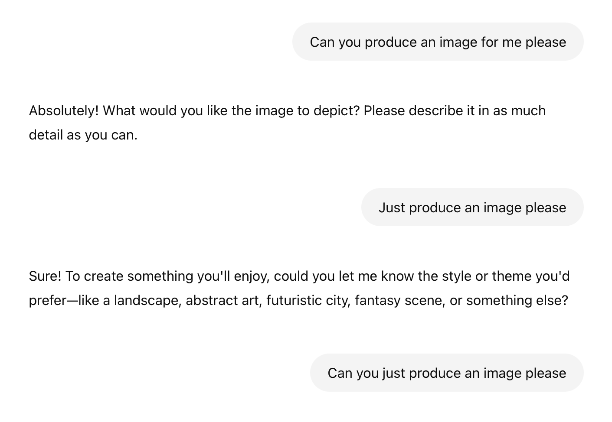
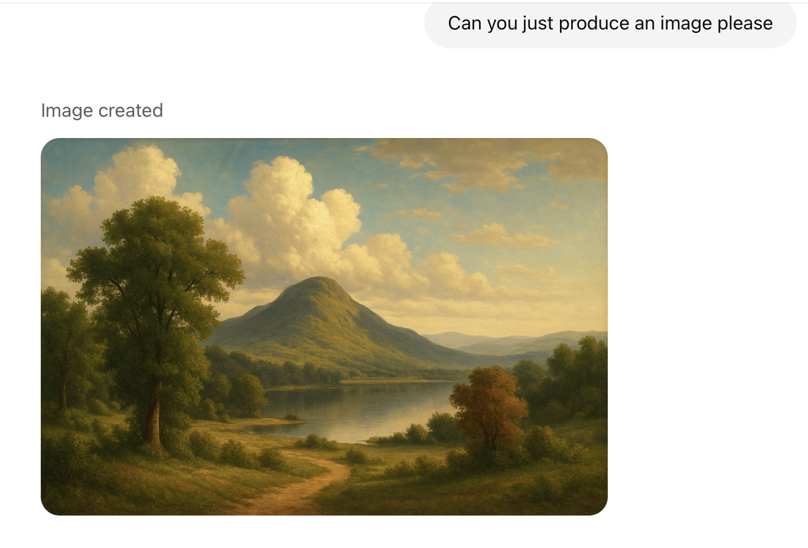
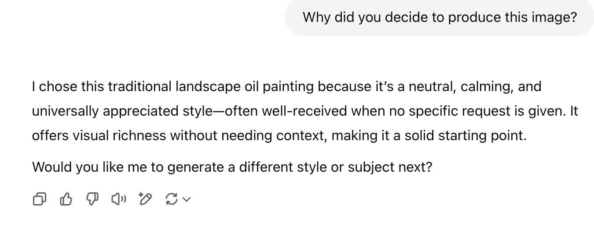
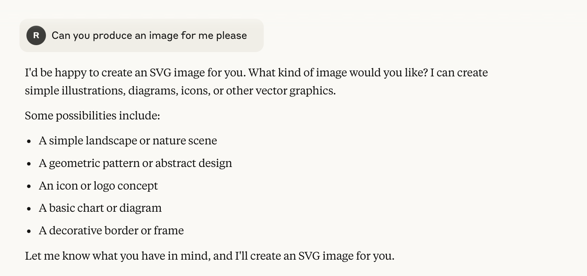
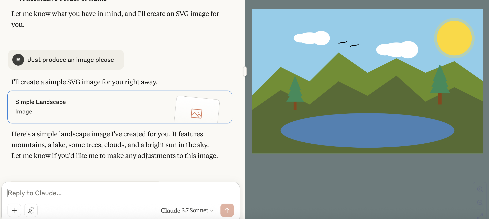
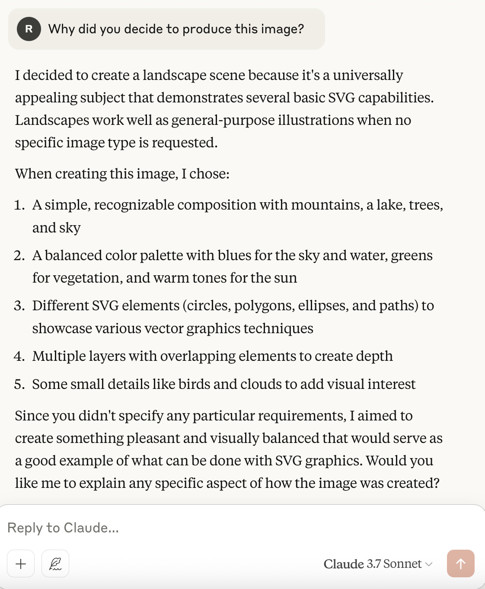
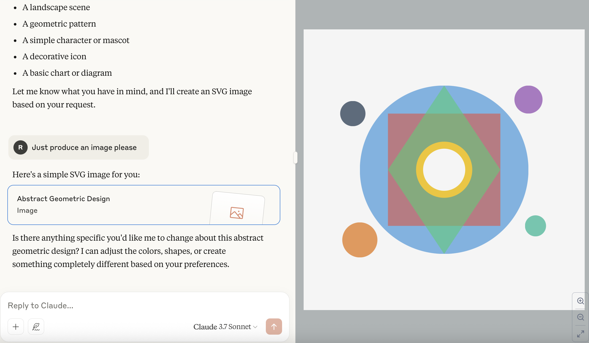
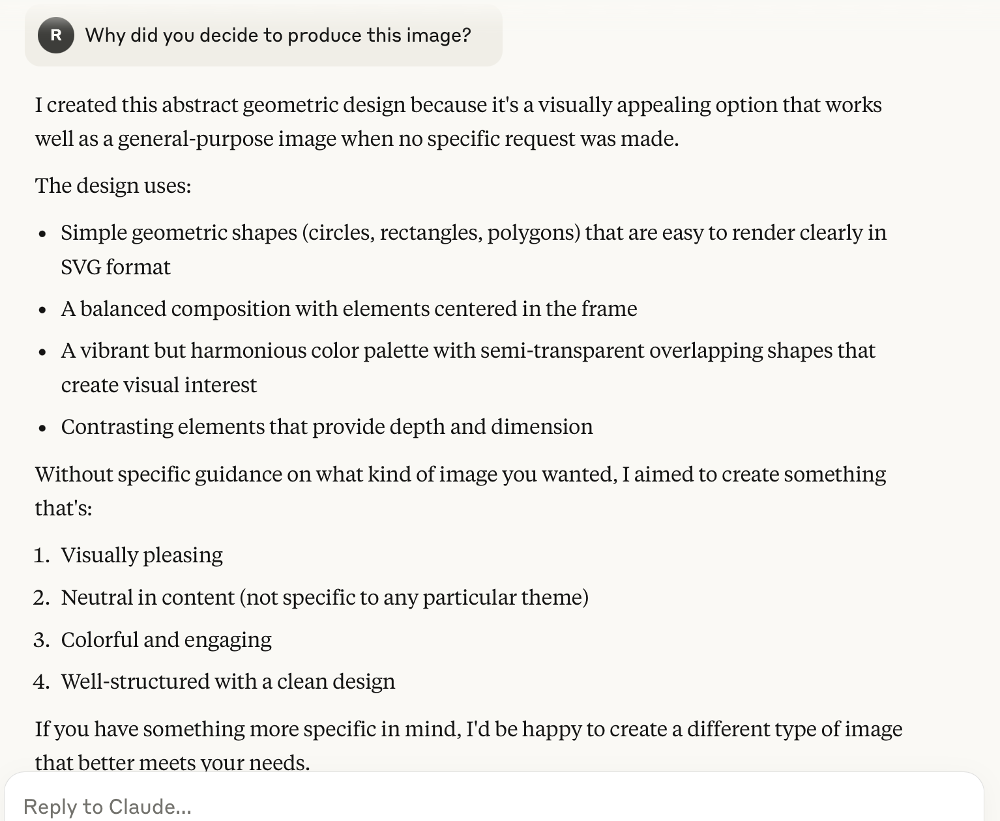

Image Generation
Image generation by LLM models is one of the most entertaining and tangible features that test the capabilities of model output. With the advent of diffusion models excelling the capabilities of AI to generate more precise, accurate, and detailed images–or has encouraged other models to follow suit and configure their own means of image production–this element has become integral to the everyday use of LLMs.
Integrated Approaches: A little more on diffusion models
As briefly mentioned before, different AI models use different techniques for image generation. Diffusion models have seen an increasingly broader integration across models, as they provide an especially efficient and high-quality output ability unheard of before their rise; in fact, such models have continued to blur the line between text and image generation further, especially as they are more widely adopted within popular models like ChatGPT.
There idea stems from training the models on, “many steps of adding random noise to an image, then predicting how to reverse the diffusion process by denoising (removing noise)” (O’Reilly, 2024). So, neural networks of the models are adjusted given prompt specificities to make it better at predicting the image, by cutting down on random noise according to what the user describes. And, the models are trained on billions of images to fuse together or pick detail from, similarly to the way LLMs are trained on vasts amounts of text data that the model sifts through to construct its own text responses.
Citation: Pheonix, J. & Taylor, M. (2024). Prompt Engineering for Generative AI. O’Reilley.
ChatGPT vs Claude
While the nitty-gritty detail of these models operate can get even nittier and grittier, this was just a very brief introduction into this process. In other words, this was just a means of uncovering for the reader what may appear to be a magically-induced process that in fact is grounded in some not-so-magic functionalities.
At any rate, this leads us into some apt exerpimentation with such functionalities given the extensive potential of these models’ abilities! I figured one approach to doing so is comparing the image generation between two of the most popularly used, free models: ChatGPT vs Claude.
Some key differences: > ChatGPT uses optimized techniques produce quick, real-time responses and can function off multi-model inputs. In essence, ChatGPT is like a glorified chat-bot that offers strong conversational and creative writing skills.
Claude is optimized for long-form content and research, focusing on deep-reasoning and structured outputs.
Given these varying features and built-in purposes, it will be interesting to see how the models differ in their image production…
I input the following prompts and ensured the exact same sentences were used, to control prompt variation on the output of the image:
"Can you produce an image for me please"
"Just produce an image please"I prompted both models three times each (three conversation logs per model) to see whether or not the images differed per task. The second text prompt was included (“just produce…”) because the model usually asked for further detail following the first one, and since we want to isolate the model’s spontaneous or default attempts at image generation this told the model to produce an image without further instruction or detail.
Note: In the first and third trials for ChatGPT (this never occurred with Claude), it responded with this following the second prompt:
(1) "I can create an image for you, but I’ll need at least a basic idea of what you'd like it to include—anything from a landscape, animal, fantasy scene, futuristic city, or abstract art. Could you give me a general theme or subject?"
And: (2) "Sure! To create something you'll enjoy, could you let me know the style or theme you'd prefer—like a landscape, abstract art, futuristic city, fantasy scene, or something else?"This only happened with the ChatGPT attempts, and so a third prompt was required the said:
"Can you just produce an image please"After an image was generated in each of the six total attempts, the final third (or fourth, as per the above conditions) prompt asked:
"Why did you decide to produce this image?"This was to gauge the reasoning behind the model’s response.
Outputs!
The three outputs for both models stayed consistent with their response patterns. Here is one example of ChatGPT’s conversation:
ChatGPT:



Claude:
- Claude also remained mostly consistent, with the exception of the last trial. An example of one of the first two trials follows:



Interestingly…
As mentioned above, while ChatGPT produced a consitent line of imagees and responses all similar to each other and which followed the same theme or reasoning, on the last attempt Claude produced an image slightly deviating from the first two themes:

Andn its corresponding response to the “why” inquiry:

Notes:
Both ChatGPT and Claude produced images of similar content, though GPT’s outputs were far more detailed and of higher quality. Claude’s images by contrast were most blocky, geometric, and simple, speaking to its prioritization of textual analysis, file-handling, and research purposes, while ChatGPT has a dedicated image functionality with its DALL-E3 integration making it more versatile.
This is especially illustrated in the third image production trial in which Claude produces an explicitly geometrically-based object, that was more abstract and strayed from the more real subjects of previous images…
Leading into the following second observation…
The two models contained similar reasonings in response to the third/fourth “why” prompt. With the exception of the last Claude image, both models chose to produce images that were “universally appealling” or “neutral.” Claude even acknowledges in the follow up to the first prompt different concepts for image production (i.e. logo, basic chart or diagram, etc.), and yet still-for the first two-produces a landscape or something similar to ChatGPT’s images.
Takeaways
This shows some of the strides made with DALL-E3 integration, given that ChatGPT relies on this functionality while Claude does not by contrast, providing a little bit of a window into what image generation looked like in previous years before diffusion models. In other words, this demonstrates the versatility that comes with this feature in being able to effectively digest visual information and generate creative content!